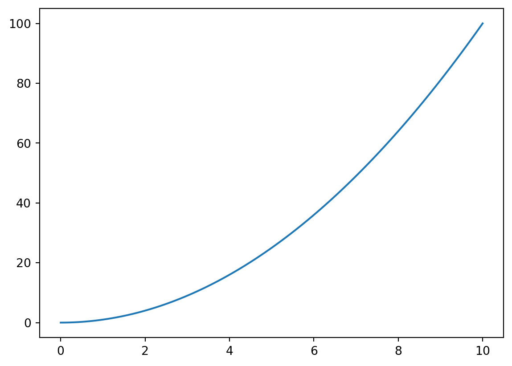
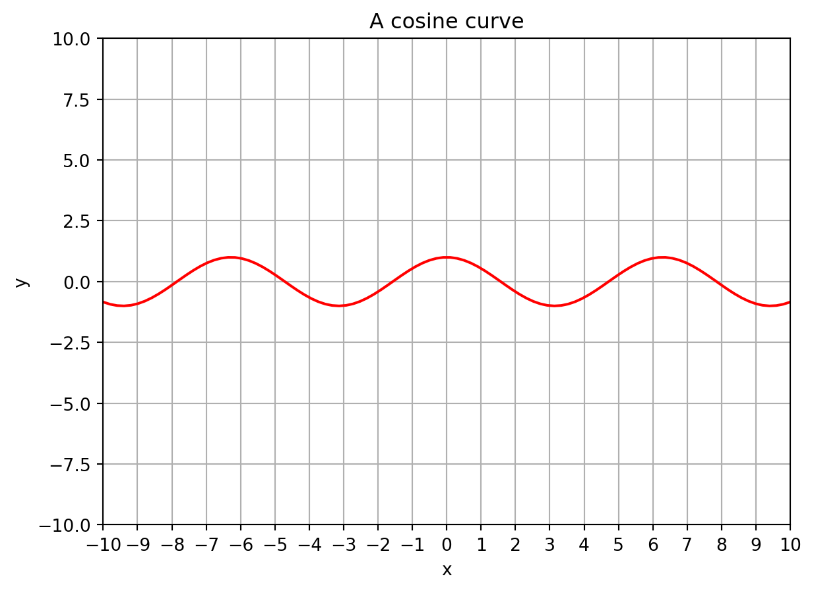

# code cells
## Code cells contain python code that gets executed.
# indicates a comment that is ignored.
print("Hello World!")Hello World!Fundamentals of Data Science
This is a markdown cell:
# code cells
## Code cells contain python code that gets executed.
# indicates a comment that is ignored.
print("Hello World!")Hello World!In this walkthrough we will look at the following elements of Python in a jupyter notebook.
The print statement
print("hello world!")hello world!Variables, variable names, and assignment/datatypes
count = 5 # an integer
name = "Jeremy Teitelbaum" # a string
paragraph = """This is how you enter a multiline string
in python. It is enclosed in triple quotes."""
pi = 3.14159 # a float
epsilon = 1.0e-6 # a float
students = ["Jeremy", "Phillip", "Sara", "Molly"] # a list
HotDog = Trueprint(students)['Jeremy', 'Phillip', 'Sara', 'Molly']Compare print for multiline strings with the string value. (\n means newline)
print(paragraph)This is how you enter a multiline string
in python. It is enclosed in triple quotes.paragraph'This is how you enter a multiline string\nin python. It is enclosed in triple quotes.'Arithmetic operations
print(count)
count = count + 1
print(count)5
61 / pi0.31831015504887655print(2**3) # exponent
print(1 / 2) # division (converts integer to float)
print(1 / (1 / 2)) # 2 becomes 2.08
0.5
2.0quotient = 5 // 3 # integer division
remainder = 5 % 3 # remainder
print(quotient, remainder)1 2Operations on strings and lists
"Jeremy" + " Teitelbaum"'Jeremy Teitelbaum'["a", "b", "c"] + ["d"]['a', 'b', 'c', 'd']len("Jeremy")6len(["Jeremy", "Teitelbaum"])2firstName = "Jeremy"
lastName = "Teitelbaum"
fullName = firstName + " " + lastNameSome fancier printing
print(f"The first name is {firstName}")
print(f"The last name is {lastName}")
print(f"The full name is {firstName} {lastName}")
print(firstName, lastName, sep=",")
print(firstName, lastName, sep=":")The first name is Jeremy
The last name is Teitelbaum
The full name is Jeremy Teitelbaum
Jeremy,Teitelbaum
Jeremy:TeitelbaumSlicing
In python, we always count from zero!!!
firstName[0]'J'lastName[1]'e'# [a:b] means from a to b-1 inclusive
print(firstName[0:3])
print(firstName[3:])
print(firstName[3:5])Jer
emy
em# negative indices count from the end
print(firstName[-1]) # the last element
print(firstName[-3:-1]) # elements -3 and -2, but not -1y
em# [a:b:c] means from a to b-1 in steps of c
# missing numbers mean (beginnging):(end)
print(firstName[:5:2])
print(firstName[::2])
print(firstName[::-1]) # reverse the string
print(firstName[3::-1]) # 3,2,1,0
print(firstName[3:0:-1]) # 3,2,1Jrm
Jrm
ymereJ
ereJ
ereSlices work the same on list elements
print(students[0])
print(students[-1])
every_other_student = students[::2]
print(every_other_student)Jeremy
Molly
['Jeremy', 'Sara']Libraries
import mathmath.log(23)3.1354942159291497math.pi3.141592653589793math.cos(math.pi / 2) # should be zero6.123233995736766e-17math.cos(math.pi / 2) == 0Falseabs(math.cos(math.pi / 2)) < 1e-6Truemath.pi == piFalseimport numpy as npprint(np.random.randint(0, 10))2print(np.__version__)1.24.2from numpy.random import randintrandint(1, 10)5A numpy array is like a list, but:
- it's itended for use with numbers
- it's designed for fast arithmetic and numerical operations
- it can be multi-dimensional -- like a table or matrix -- although we won't use that here.x = np.array([1, 2, 3, 4, 5, 6])
print(x)[1 2 3 4 5 6]You access arrays like lists, and can use slices; indices start at zero.
x[2:4]array([3, 4])When you apply an operation to an array, it gets applied to every element of the array.
print(f"Square of x is {x**2}")
print(f"1/x is {1/x}")
print(f"cos(x) is {np.cos(x)}")Square of x is [ 1 4 9 16 25 36]
1/x is [1. 0.5 0.33333333 0.25 0.2 0.16666667]
cos(x) is [ 0.54030231 -0.41614684 -0.9899925 -0.65364362 0.28366219 0.96017029]Some special arrays.
x = np.zeros(10) # 10 zeros
y = np.ones(20) # 20 ones
z = np.linspace(0, 10, 100) # 100 equally spaced numbers from 0 to 10 **inclusive**
w = np.array(list(range(-10, 10, 2)))print(w)[-10 -8 -6 -4 -2 0 2 4 6 8]print(z)[ 0. 0.1010101 0.2020202 0.3030303 0.4040404 0.50505051
0.60606061 0.70707071 0.80808081 0.90909091 1.01010101 1.11111111
1.21212121 1.31313131 1.41414141 1.51515152 1.61616162 1.71717172
1.81818182 1.91919192 2.02020202 2.12121212 2.22222222 2.32323232
2.42424242 2.52525253 2.62626263 2.72727273 2.82828283 2.92929293
3.03030303 3.13131313 3.23232323 3.33333333 3.43434343 3.53535354
3.63636364 3.73737374 3.83838384 3.93939394 4.04040404 4.14141414
4.24242424 4.34343434 4.44444444 4.54545455 4.64646465 4.74747475
4.84848485 4.94949495 5.05050505 5.15151515 5.25252525 5.35353535
5.45454545 5.55555556 5.65656566 5.75757576 5.85858586 5.95959596
6.06060606 6.16161616 6.26262626 6.36363636 6.46464646 6.56565657
6.66666667 6.76767677 6.86868687 6.96969697 7.07070707 7.17171717
7.27272727 7.37373737 7.47474747 7.57575758 7.67676768 7.77777778
7.87878788 7.97979798 8.08080808 8.18181818 8.28282828 8.38383838
8.48484848 8.58585859 8.68686869 8.78787879 8.88888889 8.98989899
9.09090909 9.19191919 9.29292929 9.39393939 9.49494949 9.5959596
9.6969697 9.7979798 9.8989899 10. ]## Plotting with matplotlibimport matplotlib.pyplot as pltplt.plot(z, z**2)
z = np.linspace(-10, 10, 100)
plt.axes()
plt.plot(z, np.cos(z), color="red")
plt.title("A cosine curve")
plt.grid()
plt.xlim(-10, 10)
plt.ylim(-10, 10)
plt.xticks(list(range(-10, 11)))
plt.xlabel("x")
plt.ylabel("y")Text(0, 0.5, 'y')